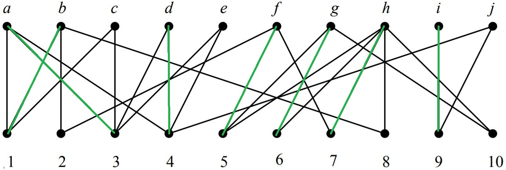

Automatic and optimal course allocation with wishlists from students

As part of the management of the assignment of first year students to second semester courses and projects at Ecole des Ponts, we were asked to design a computer program that manages the assignment of students to courses. In order to meet the requirements of the first year department, this program must comply with a number of constraints.
Our objective is to optimize the process of assigning students to courses and projects, by proposing a distribution of students that respects as much as possible the ranking of their wishes. Indeed, we have three main sets of courses and projects:
In addition, each course and each project has a maximum number of students and a minimum number of students required to open the course. These numbers may vary from one course to another. Finally, some courses or projects may be discontinued if demand is not high enough.
In order to account for the fact that a student has or has not received his first wish, we have introduced a regret function, the value of which is all the higher as the first wishes are not fulfilled. Our modeling aims at minimizing the total regret function. For a given project, the regret function of a student corresponds to the weight function evaluated at the wish number of the project. The weight function is a function that associates a number to a wish number that is higher the higher the wish number is, and is worth $0$ if it is the student's $1$ wish. An example of a quadratic weight function ($f(x) = (x - 1)^2$) is given below :
| Rank | Weight |
|---|---|
| 1 | 0 |
| 2 | 1 |
| 3 | 4 |
| 4 | 9 |
| 5 | 16 |
| … | … |
In order to know to which project a student is assigned, we use a matrix $A = (a_{e,p})_{e,p}$ whose coefficient $a_{e,p}$ is $1$ if student $e$ is assigned to project $p$ and $0$ otherwise. Given this, the regret function of a student for a given project is $\sum_{p\in P} a_{e,p} w(c_{e,p})$. This minimization problem comes with several constraints:
Mathematically, the problem thus modeled is written as follows:
$$\text{min} \sum_{e \in E} \sum_{p \in P} a_{e, p}.w(c_{e, p}) + Kr_{max}$$
$$\text{s.t.} \ \forall p \in P, \ n_p = \sum_{e\in E} a_{e, p}$$
$$\forall p \in P, \ \delta_p.m_p \leq n_p$$
$$\forall p \in P, \ n_p \leq \delta_p.M_p$$
$$\forall e \in E, \ \sum_{p \in P} a_{e, p} = 1$$
$$\forall p \in P, \ \delta_p \in \{0, 1\}$$
$$\forall p \in P, \ \forall e \in E, \ a_{e, p} \in \{0, 1\}$$
When there are several projects or courses to choose from, the allocation results must take into account each other. For example, if a student is assigned to a Wish $3$, their other assignments should correspond, as much as possible, to Wish $1$ courses. This is accomplished by adding a variable $r_{max}$ which corresponds to the maximum regret per student. Each student's regret ($\sum_{p \in P} a_{e, p}w(c_{e, p})$) is therefore increased by $r_{max}$.
In order to minimize this maximum regret, this variable is added to the total regret in the function to be minimized with a multiplicative coefficient $K$. This coefficient is a major of the total regret, therefore a very large number, so that the maximum regret per student only increases if there is no other possibility.
Finally, it must be ensured that if a student is assigned to a research project, then he or she is necessarily assigned to the associated opening course. Consequently, the assignment variable $a_{e,p}$ to a given opening course $p$ increases the assignment variable $a_{e, pr(p)}$ of the associated research project. Hence the reformulation of the previous problem as :
$$\text{min} \sum_{e \in E} \sum_{p \in P} a_{e, p}w(c_{e, p}) + Kr_{max}$$
$$\textrm{s.c.} \ \forall p \in P, \ n_p = \sum_{e_\in E} a_{e, p}$$
$$\forall p \in P, \ \delta_p.m_p \leq n_p$$
$$\forall p \in P, \ n_p \leq \delta_p.M_p$$
$$\forall e \in E, \ \sum_{p \in P} a_{e, p}.w(c_{e, p}) \leq r_{max}$$
$$\forall j \in J, \ \sum_{p \in P_j} a_{e, p} = 1$$
$$\forall e \in E, \ \forall p \in P_{\text{c.o.}}, \ a_{e, pr(p)} \leq a_{e, p}$$
$$\forall p \in P, \ \delta_p \in \{0, 1\}$$
$$\forall p \in P, \ \forall e \in E, \ a_{e, p} \in \{0, 1\}$$
We compared our program to the $2017$ allocation results. We could see in the modeling that the fundamental parameter of the optimization is the $w$ weight function. By playing with the weights, we can change the result of the optimization entirely. In the case of our problem, we want to give massively first or second choices, while exceptionally allowing third choices. To do this, we worked with the weight function below, as well as with another weight function where the weight of the $3$ rank goes from $15$ to $50$.
| Rank | Weight |
|---|---|
| 1 | 0 |
| 2 | 5 |
| 3 | 15 |
| 4 | 1000 |
| 5 | 10000 |
| … | … |
Let's compare the results obtained for these two weight functions with the results of the current optimization. The results are summarized in the table below, since with our optimization program we obtain the same results as those obtained manually by the administration: they were already at an optimum.
| Choice | Monday | Tuesday | Wednesday | Thursday | Research | Department |
|---|---|---|---|---|---|---|
| 1 | 137 | 126 | 114 | 111 | 92 | 107 |
| 2 | 5 | 16 | 28 | 31 | 45 | 35 |
| 3 | 0 | 0 | 0 | 0 | 5 | 0 |
Above all, our software saves time since it runs in about $30$ seconds. The method previously used required to manually take over the results of the algorithm and lasted about $15$ hours. The time saved is therefore considerable.
Due to the very good results of our software in $2017$, it has been used every year since then by the first year department. Here are the results obtained for the year $2018$, where $152$ students had to grant wishes, compared to $142$ the year before:
| Choice | Monday | Tuesday | Wednesday | Thursday | Research | Department |
|---|---|---|---|---|---|---|
| 1 | 121 | 143 | 120 | 110 | 102 | NC |
| 2 | 30 | 7 | 31 | 40 | 43 | NC |
| 3 | 1 | 2 | 1 | 2 | 7 | NC |
The results are very satisfying, although there is an increase in the number of wishes $3$. This is mainly due to the fact that despite the increase in the number of students, the number of students in the proposed courses has not been revised upwards.